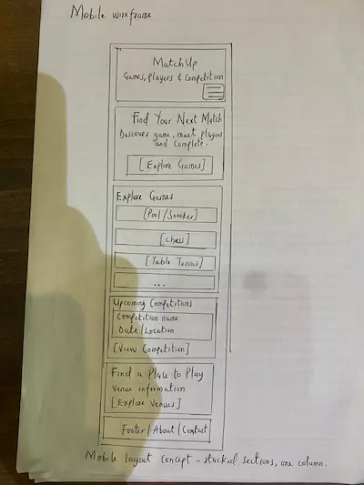
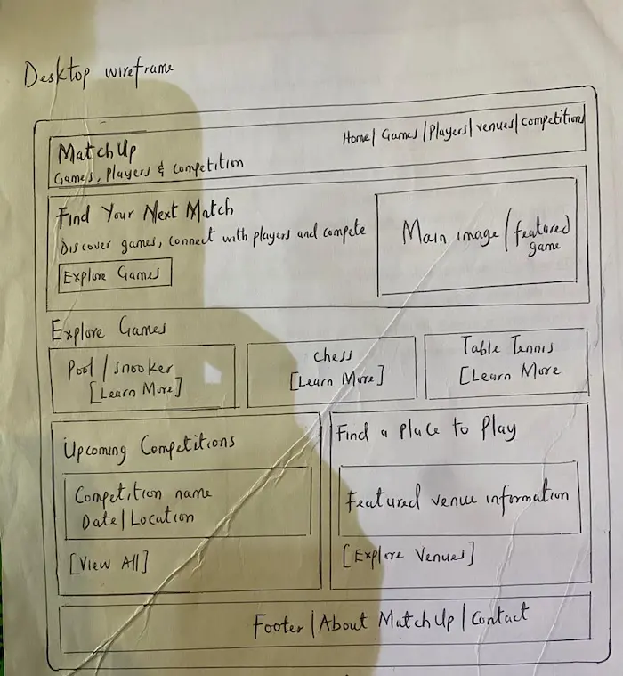

Finding an Opponent
Where can I find someone nearby who wants to play pool or snooker at a similar skill level?
WDD 231 | Individual Project
Games, Players & Competition
Project Site Plan
MatchUp represents the main goal of the platform: bringing together people who want to play games, find opponents, discover venues, connect with coaches, and participate in competitions.
The name is short, memorable, and flexible enough to support different competitive games, including pool, snooker, billiards, chess, table tennis, and darts.
Proposed domain: matchup.games (Availability not verified)
MatchUp is a website prototype designed to help people discover games, find potential opponents, locate places to play, explore coaching opportunities, and learn about competitions.
The initial focus will be on cue sports such as snooker, pool, and billiards, with the possibility of including chess, table tennis, darts, and other competitive games.
The prototype will demonstrate how game information, sample player profiles, venues, coaches, competitions, and rankings can be presented. JavaScript and JSON data will support selected dynamic content and interactions.
These questions represent information needs of people who may use MatchUp.
Where can I find someone nearby who wants to play pool or snooker at a similar skill level?
What competitions are coming up, and where can I find their dates, locations, and game categories?
Where can I find a suitable place to play my preferred game?
How can I find a coach who can help me improve my skills in a particular game?
MatchUp will use a modern, sports-inspired color scheme. The selected colors provide contrast and visual hierarchy while keeping the interface clear and easy to navigate.
#16213E
Used for the header, main text, navigation, borders, and major structural elements.
#1F7A6D
Used for section headings, links, buttons, and interactive accents.
#F4A261
Used for highlights, badges, borders, and important information.
#FFFFFF
Used for the page background, content sections, and cards.
MatchUp — Games, Players & Competition
Space Grotesk will be used for the site name, main headings, section headings, and other display text that needs to stand out.
Find games. Meet players. Compete.
Inter will be used for body text, descriptions, navigation, labels, and supporting information because it remains clear and readable at different screen sizes.
The following pages describe the intended structure of the MatchUp prototype.
Introduces MatchUp and provides links to games, player discovery, venues, coaches, and upcoming competitions.
Presents supported games and sample player or match information to help visitors explore playing opportunities.
Presents sample information about places to play and coaches who can help players develop their skills.
Displays sample upcoming competitions and player rankings to demonstrate how competitive information could be organized.
The prototype is intended to demonstrate the following web development features where appropriate:
These black-and-white wireframes will show the proposed structure of the MatchUp home page before detailed colors, imagery, and styling are applied.


MatchUp will begin as a small website prototype. The broader concept could eventually support a wider community of players, venues, coaches, clubs, schools, universities, and organizations.
Possible future features include player accounts, verified match records, matchmaking, venue and coach bookings, leagues, tournaments, school and university competitions, corporate competitions, community championships, inter-city competitions, sponsorships, and standardized competition venues.